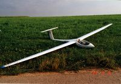 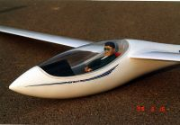
1998-99 ASW 27, 4 m Spannweite als Profil das Eppler 203 auf Eppler 193
gestrakt,
recycling der Pilotenpuppe aus dem Jahr '86, 4,5 kg Masse.
Dieses Modell hat durch das verwendete Profil sehr gutmütige Eigenschaften und ist sehr gut bei den unterschiedlichsten Wetterlagen zu fliegen.
Die ASW 27 wurde im Herbst 2005 mit einem Torcman 350 Triton Elektromotor versehen. Der Motor dient zum hochholen des Modells nach dem Absaufen. Durch herausnehmen der Pilotenpuppe und kürzen des Flächenstahls wurde soviel an Gewicht eingespart, dass das Modell gerade noch unter der 5 Kg Grenze liegt. Der 4S LiPo Akku, 3200 mAh, liegt so, wie der Versorgungsakku praktisch im Schwerpunkt (das Bild zeigt noch den Akkukasten vom ersten NiMh Akku). Bei schwachem Tragen und guter Landegelegenheit kann dann leicht auf den Antriebsakku verzichtet werden.
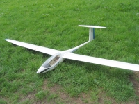 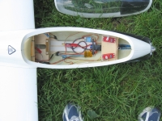
Der Schrauben, Motor und Akkukombination wurden mit einem UniLog im Flug vermessen. Hier das entsprechende Diagramm:
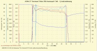
Auch die Fluggeschwindigkeit wurde mit einem Staudrucksensor und dem UniLog vermessen, um mal eine Vorstellung davon zu bekommen in welcher Situation in etwa welche Geschwindigkeit anliegt. Die Bilder zeigen die Applikation des Sensors auf der Tragfläche und das entsprechende Diagramm:
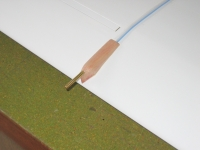 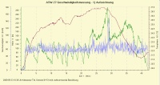
Eine Optimierung des Antriebs, auf maximal erreichbare Höhe pro Akkuladung, ergibt sich mit einer Aeronaut 17x8 Klappluftschraube. Die statistische Auswertung ergibt eine Wert von über 1000 (Motor-)Höhenmetern. Mit Luftschrauben grösserer Steigung, bei denen der Steigflug steiler erscheint, ergaben sich Werte, die bis zu 25 % unter der den genannten 1000 Höhenmetern. Für mich eine lohnenswerte Analyse mit Hilfe des UniLog und dem DataExplorer.
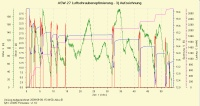 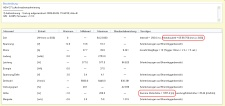
Auch hier habe ich den Empfängerstrom vermessen, da auch dieses Modell mit LiIo Akkus über einen Längsregler empfängermässig versorgt wird. Es kommt keine Versorgung über ein Regler BEC zum Einsatz, da der Regler bei den anliegenden Stömen besser über einen Optokoppler getrennt ist.
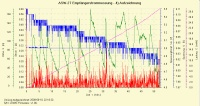 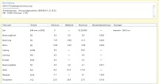
Die Grafiken aller Auswertungen wurden mit dem kostenlosen Open-Source-Programm DataExplorer erstellt.
Den Plan für die Flügel von diesem Modell habe ich mit einer Schulversion von AutoCAD gezeichnet (ASW27_Fluegel.pdf).